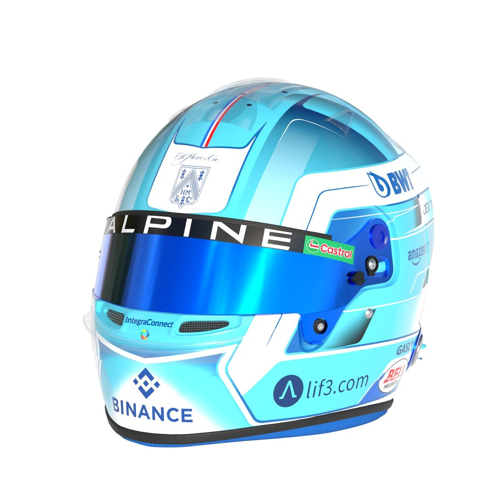
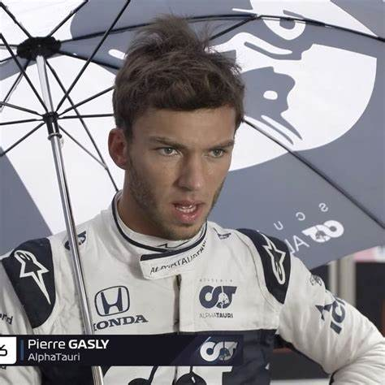
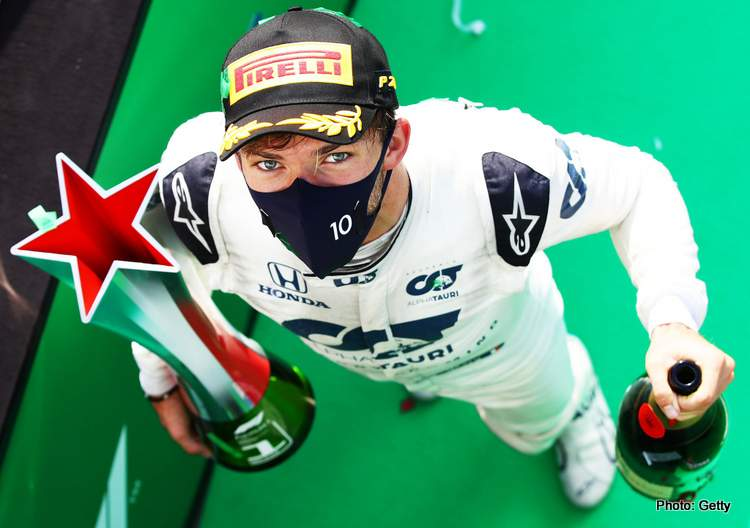

Pierre Jean-Jacques Gasly
- Team: Alpin
- Land: Frankreich
- Geburtsort: Rouen, Frankreich
- Geburtsdatum: 07.02.1996
- Alter: 28
- Podien: 5
- Grands Prix gefahren: 151
- Weltmeisterschaften: 0
- Team: Alpine
- Fahrernummer: 10
Wenn es einen Mann gibt, der weiß, wie groß die Achterbahnfahrt in der Karriere eines F1-Fahrers sein kann, dann ist es Pierre Gasly! Der fliegende Franzose wurde 2017 für sein Debüt in Malaysia anstelle von Daniil Kvyat nominiert und nachdem er sein Können unter Beweis gestellt hatte, wurde er im folgenden Jahr zum Toro-Rosso-Fahrer ernannt. Nach weiteren 21 Rennen in seiner noch jungen Karriere wurde Gasly erneut nach oben versetzt - dieses Mal als Ersatz für Red Bull-Star Daniel Ricciardo. Gasly schien ein Händchen dafür zu haben, zur richtigen Zeit am richtigen Ort zu sein – eine Eigenschaft, die auf der Strecke ebenso nützlich ist. Eine Reihe beeindruckender Leistungen von Toro Rosso im Jahr 2018 – darunter ein brillanter vierter Platz in Bahrain – zeigte, dass er vielversprechend für das ist, was er 2019 mit der A-Mannschaft erreichen könnte. Leider erschien dieses Versprechen nur in Blitzen - und er litt schnell unter ungünstigen Vergleichen mit Superstar-Teamkollege Max Verstappen. So sehr, dass er nach der Sommerpause zurück zu Toro Rosso geschickt wurde, wo ein anderer junger Aufsteiger – Alex Albon – eine Chance auf dem "Senior"-Platz von Red Bull erhielt. Aber Gasly erholte sich, wie es nur Gasly kann. In den verbleibenden neun Saisonrennen sammelte er fast so viele Punkte, wie Teamkollege Kvyat über das gesamte Jahr hinweg – und sicherte sich mit P2 in Brasilien sein bisher bestes Rennergebnis. Dieser Weg setzte sich 2020 fort und gipfelte mit einem emotionalen Premierensieg beim Heimrennen des umbenannten AlphaTauri-Teams in Italien und ließ 2021 nicht nach, als er wieder auf dem Podium stand und 110 der 142 Punkte der Mannschaft holte. Als der Schwung von AlphaTauri im Jahr 2022 ins Stocken geriet, beschloss Gasly, dass es Zeit für eine Veränderung war – in Form des französischen Teams Alpine, mit seinem französischen Landsmann – und alten Widersacher – Esteban Ocon als Teamkollegen. Die Frage ist nun, ob er wieder in Schwung kommen und sich eine weitere Chance auf die große F1 verschaffen kann...
 